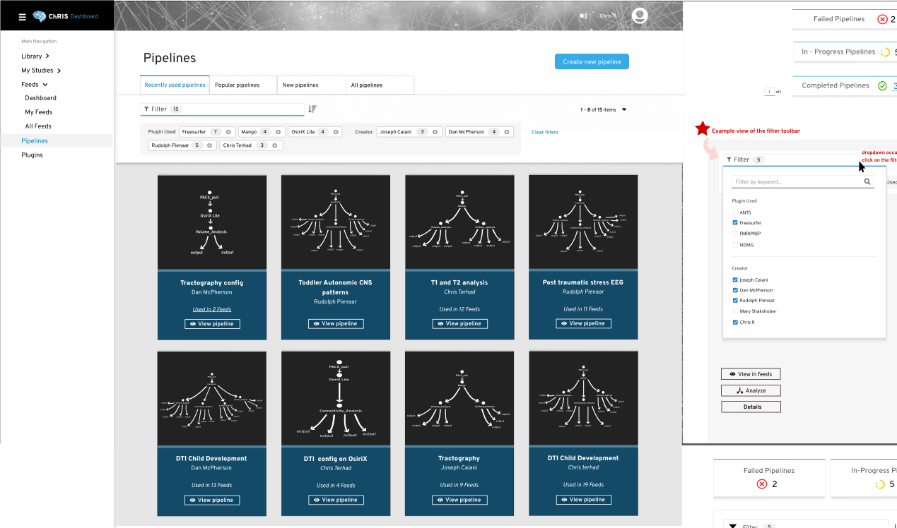

Red Hat UI Internship

May 2019 - August 2019
Role: UI Designer
Tools: Inkscape, FontAwesome icons, GIMP, Slack, Patternfly UI
Team: Máirín Duffy (UX Designer, Supervisor), full list
Available DemoIntroduction to chRIS
ChRIS is an open source medical image processing system that is designed to give clinicians accessible computational research. The goal of the project is to improve the scale and efficiency of image processing applications with Openshift and Openstack, create an ecosystem with attainable plug-ins, and possible cullaboration between its users. Using the expertise of Boston Children’s Hospital employees, Massachusetts Open Cloud storage capabilities, and Red Hat’s software development team, ChRIS has the potential to improve the lives of clinicians and patients.
Responsibilities
- Design a responsive mockup of the Pipeline list
- Awareness of desktop and phone display limitations
- Test the responsiveness of the current website.
Challenges
- Difficulty finding resources/current design layouts for mobile platforms
- Patternfly is mostly used on desktop-based platforms
- Limited knowledge about technical mobile UI design
Initial digital design sketches
I was at a crossroad between creating new design styles and trying to work within the bounding box. I didn’t want to be a burden designing something the front end developers have no context for. Thus, I sent in an unappealing draft to my mentor and asked for help. From there, we started talking about features that needed to be displayed, gathering inspiration from github, and trying out styles. As much as the aesthetics bothered me to the bone, I put together information carried from the desktop version of the page to the mobile draft.
Solution
Using parts of the current Patternfly components, I created a new card layout.
Desktop version
The desktop mockup for the pipeline list is a card based data table. I designed it that way so there would be unification between the ChRIS UI Dashboard and the ChRIS Store.
What I learned
I learned about UI frameworks! Furthermore, this experience jump started my knowledge about responsive design, pipelines, and plugins. The only downside was that I created the visual "user interactions" by hand by heavily relying on the screen snip tool.
What I wish I knew
2020 update: Looking back to my past work, I feel so embarassed how bad these mockups look. I wish I had a foundational knowledge of web programming, UI frameworks, and open source design tools so I could've expedited my work flow. At the time, I didn't fully comprehend responsive design or functional visual design. This was my second time working on a UI project and I can tell that I still only cared about aesthetics during this time, rather than functionality.